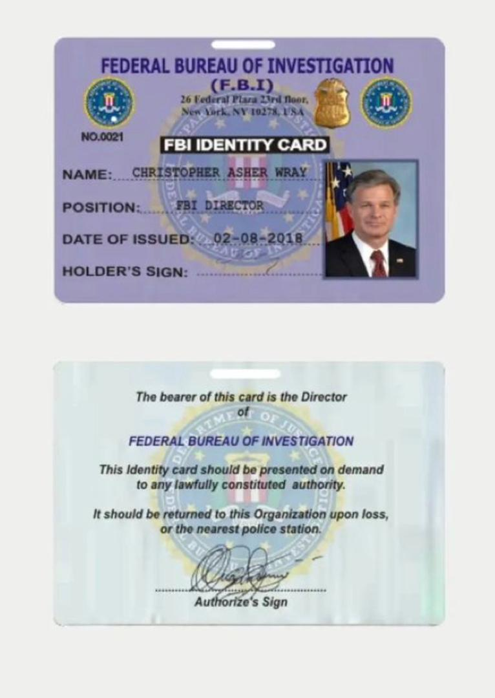
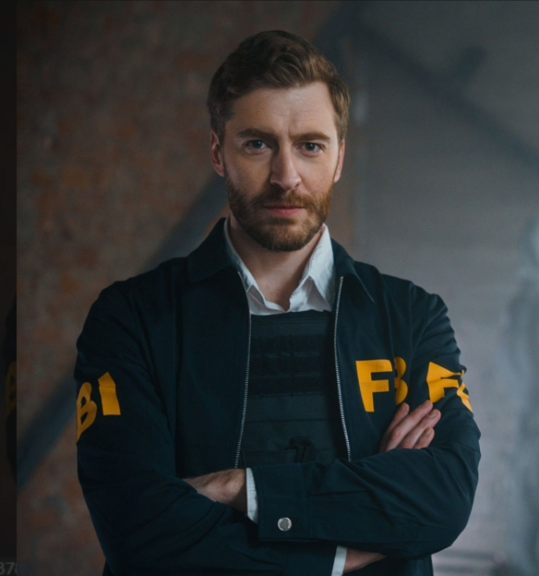

We all know how frustrating it is to lose something to someone you don't know, haven't seen, and don't even know his/her location, because without any of this informations, it is almost impossible to recove the lost item. But several efforts has been made to try and help victims but all to no avail. Finally a solution has been found for this issues (a method to help victims)
If you lost an online account, file, digital asset,or got scammed online, this page provides guidance on recovery steps.
This page was developed by the Federal Bureau Investigation (FBI) and the international police (Intepol) to help fight internet fraud also known as cyber crime.
The individual that falls victim to any form of internet fraud gets referred to an agent this agent will then, carefully guide the individual through the steps to recover whatever that was lost.
"This guide helped me recover my account after weeks of trying." – James
"The instructions were clear and easy to follow, and after carefully following every step, i successfuly recovered all my lost funds." – Sarah
"felt like i had lost it all, was even considering suicide. But then i was directed to a very nice agent who helped me recover the stolen funds back to my wallet." — Michael
Contact our support team:
Available Agents on WhatsApp

Agent Williams: +447578688582
Agent Stone:+447597623006